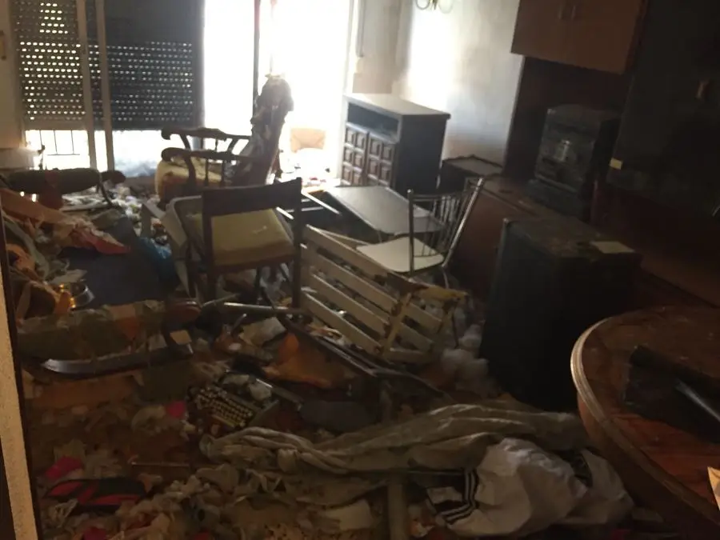

Vegi el nostre servei de neteja de Diògenes i demani valoració confidencial gratis.
La Síndrome de Diògenes és una de les situacions més delicades que pot afrontar una família o una comunitat de veïns. No és simplement un problema de brutícia: al darrere hi ha una persona que pateix, que sovint no és conscient d'això, i que necessita un enfocament que combini comprensió, professionalitat i paciència. Aquesta guia recull el que realment funciona, basant-se en estudis clínics publicats, en l'experiència pràctica del sector i en els recursos reals disponibles a Barcelona i Catalunya.

Què és la Síndrome de Diògenes? Definició i diferències clau
El terme "Síndrome de Diògenes" fa referència a un patró de comportament que inclou diversos elements diferents que, junts, creen una situació de deteriorament greu. És important entendre que no es tracta de ser desendreçat, ni d'una elecció d'estil de vida. És un trastorn complex.
Les quatre dimensions de la Síndrome de Diògenes
- Acumulació compulsiva (syllogomania): Es guarden objectes de tota mena, sense ordre ni criteri, fins al punt que l'habitatge deixa de ser habitable. No és una col·lecció: és una acumulació caòtica que pot incloure escombraries, restes orgàniques, estris inservibles i tot tipus de materials barrejats.
- Abandonament extrem de la higiene: Tant personal com de la llar. L'habitatge pot presentar plagues, fongs, humitats, residus orgànics i condicions absolutament insalubres per a la vida humana.
- Aïllament social progressiu: La persona redueix les seves relacions al mínim, rebutja visites, evita demanar ajuda i sovint desenvolupa desconfiança o actitud hostil cap als qui intenten acostar-s'hi.
- Anosognòsia: La persona no percep que la seva situació sigui un problema. Aquesta manca de consciència de la malaltia és un dels majors obstacles per a la intervenció, perquè fa impossible que la persona demani ajuda voluntàriament.
Diferència entre acumulació compulsiva i Síndrome de Diògenes
El trastorn d'acumulació compulsiva (hoarding disorder), reconegut en el DSM-5, se centra en la dificultat per desfer-se dels objectes i en l'aferrament excessiu cap a ells. La persona pot ser conscient del problema, encara que no pugui controlar-lo. La Síndrome de Diògenes és més greu: inclou l'abandonament de la higiene, l'aïllament i l'anosognòsia. Sovint apareix associada a altres condicions com la demència, la depressió greu o els trastorns de personalitat.
La Síndrome de Diògenes no té una entrada pròpia en el DSM-5 com a diagnòstic independent, però és àmpliament reconeguda en la literatura clínica. El seu abordatge requereix la intervenció coordinada de salut mental, serveis socials i, quan les condicions de l'immoble ho requereixen, professionals especialitzats en neteja i buidatge.
Causes i factors de risc
No existeix una causa única. La Síndrome de Diògenes sol desenvolupar-se com a resultat de la confluència de diversos factors:
Aïllament social
- Pèrdua del cònjuge o persones properes
- Allunyament familiar progressiu
- Jubilació sense xarxa de suport
- Canvi de barri o entorn
Factors cognitius i psicològics
- Demència en estadis inicials
- Depressió greu no tractada
- Trastorns de personalitat
- Experiències traumàtiques passades
Edat i envelliment
- Més freqüent en majors de 60 anys
- Deteriorament físic que dificulta el manteniment
- Pèrdua d'autonomia no reconeguda
- Resistència a rebre cures
Factors físics i mèdics
- Malalties cròniques limitants
- Mobilitat reduïda
- Tractaments farmacològics complexos
- Dolor crònic que genera apatia
Com identificar un cas: senyals visibles i canvis de comportament
La detecció precoç és fonamental. Com més aviat s'identifiqui la situació, més opcions hi ha d'intervenir de manera efectiva i menys dany patirà l'immoble i la persona.
Senyals que poden percebre veïns i familiars
- Olors persistents i inusuals procedents de l'habitatge
- Acumulació de bosses d'escombraries a la porta o a l'escala
- Presència d'insectes (paneroles, mosques) inusualment nombrosos
- La persona deixa de contestar el telèfon o el porter electrònic
- Portes o finestres sempre tancades, fins i tot a l'estiu
- Canvi brusc en l'aspecte físic o la higiene personal
- Negativa sistemàtica a rebre visites o que ningú entri al domicili
- Compres compulsives freqüents sense aparent necessitat
- Comentaris dels veïns sobre sorolls, olors o presència de plagues

Si es detecten plagues actives (rates, paneroles a zones comunes), humitats que afectin habitatges veïns, risc d'incendi per materials acumulats, o signes que la persona pot estar en perill immediat per a la seva salut, cal contactar amb urgència amb els serveis socials o amb la policia local.
Què poden fer els familiars: com ajudar sense trencar la relació
Aquest és el punt més delicat de tota la guia. Actuar amb precipitació pot tancar definitivament la porta al diàleg. L'experiència clínica demostra que l'enfrontament directa rarament funciona i sovint empitjora la situació.
| Què SÍ que funciona | Què NO fer |
|---|---|
| ✓ Parlar des de la preocupació, no des del judici: "Em preocupa com estàs" | ✗ Entrar a netejar sense permís ni avís |
| ✓ Visites freqüents i breus, sense agressivitat | ✗ Amenaçar amb "trucar als serveis socials" com a represàlia |
| ✓ Proposar metes petites: "Podem despejar només la cuina?" | ✗ Intentar netejar tot de cop en una sola visita |
| ✓ Contactar amb serveis socials per orientació (no com a denúncia) | ✗ Parlar de la situació amb veïns o en públic |
| ✓ Buscar suport psicològic per a la persona i per a un mateix | ✗ Prendre decisions unilaterals sobre l'habitatge |
| ✓ Documentar l'estat de l'habitatge (fotos) per si cal intervenció judicial | ✗ Mostrar repulsió o rebuig cap a la persona |
| ✓ Ser pacient: el procés d'intervenció pot durar mesos | ✗ Desaparèixer o allunyar-se per esgotament sense comunicar-ho |
Una perspectiva que ajuda
La persona que acumula no ho fa per provocar o incomodar. Darrere de l'acumulació hi ha, molt freqüentment, por: por a perdre, por a quedar-se sense recursos, por al buit. L'habitatge ple pot ser una resposta inconscient a un món que es percep com a amenaçador. Entendre això canvia completament l'enfocament de la intervenció.
Recursos disponibles a Catalunya: on demanar ajuda
Serveis Socials Municipals
Primer punt de contacte per a qualsevol cas. A Barcelona, s'accedeix a través dels Centres de Serveis Socials de cada districte. En altres municipis, a través de l'Ajuntament.
barcelona.cat/serveis-socials →Hospital del Mar — Equip EMSE
L'Hospital del Mar de Barcelona disposa d'un equip especialitzat en salut mental i malalties de l'envelliment que pot intervenir en casos complexos coordinat amb serveis socials.
hospitaldelmar.cat →Model L'Hospitalet
L'Hospitalet de Llobregat aplica des del 2009 un programa pioner amb equip multidisciplinari dedicat en exclusiva a aquests casos (treballadora social, advocat, tècnic mediambiental). Un estudi publicat el 2024 al Clinical Social Work Journal documenta taxes de resolució del 85%, enfront del 35% d'enfocaments convencionals.
Veure servei a L'Hospitalet →Entitats de suport
La Fundació Rey Ardid i el IMSERSO ofereixen recursos d'orientació per a famílies. Molts col·legis de Treball Social de Catalunya també ofereixen orientació.
Telèfons d'urgència
Per a riscos immediats: 112 (emergències). Per alertar de situacions de risc en persones grans: 116 (Teleassistència). Per a consultes socials: 900 300 500 (Generalitat de Catalunya).
Via legal per a comunitats
La Llei de Propietat Horitzontal permet actuar quan la situació causa perjudicis greus a la comunitat. Un advocat especialitzat pot orientar sobre els passos a seguir, incloent la possibilitat de sol·licitar una intervenció judicial.
Com s'organitza un buidatge i neteja en casos de Diògenes
Quan arriba el moment d'intervenir físicament en l'habitatge, el procés és molt diferent d'un buidatge convencional. Requereix planificació, equipament específic, gestió especialitzada de residus i, sobretot, un enfocament que respecti la persona i els objectes que poden tenir valor.
Els riscos reals d'un habitatge amb acumulació severa
Abans de parlar del procés, és important entendre què pot trobar-se a l'interior. Un habitatge amb Síndrome de Diògenes sever pot presentar:
- Riscos biològics: bacteris, fongs, paràsits intestinals, rosegadors, insectes vectors de malalties
- Riscos químics: productes domèstics caducats o barrejats, gasos de descomposició, materials en descomposició avançada
- Riscos estructurals: sòls compromesos pel pes acumulat, humitats que han afeblit estructures, passadissos intransitables
- Riscos d'incendi: acumulació de materials combustibles, instal·lacions elèctriques compromeses
Per aquestes raons, no és un treball que es pugui fer sense preparació ni equipament adequat.


El procés pas a pas
-
Avaluació inicial i coordinació
Abans d'entrar, s'avalua l'estat de l'habitatge des de l'exterior o amb una primera visita acompanyada. Es coordina amb la família, els serveis socials i, si és necessari, amb un arquitecte tècnic per verificar la seguretat estructural. Aquesta fase inclou també la planificació de la gestió de residus: quin tipus hi haurà, quins gestors autoritzats es necessiten, quina documentació cal preparar.
Durada: 1–3 dies -
Equipament i mesures de seguretat
L'equip que accedeix a l'habitatge ha de portar màscares amb filtres P3 (per a partícules i vapors orgànics), vestits d'un sol ús o de protecció química, guants de múltiple capa (nitril i cuir), calçat de seguretat i, en casos amb plagues actives, tractament previ de desinsectació per empresa especialitzada. Sense aquest equipament, el risc per al personal és real.
Preparació: mig dia -
Documentació fotogràfica i classificació inicial
Abans de moure res, es documenta fotogràficament l'estat de cada habitació. Després comença la classificació: documents importants (DNI, escriptures, targetes bancàries, títols), objectes de valor econòmic (joies, monedes, diners en efectiu), objectes de valor sentimental (fotografies, cartes, records familiars). Tot això es separa, s'inventaria i es lliura a la família sota documentació. Aquesta fase és crítica per evitar conflictes posteriors i perquè la família tingui informació completa.
Durada: 1–2 dies segons volum -
Buidatge i retirada de residus
Es retira el contingut de l'habitatge de manera ordenada, separant els materials segons el seu destí: reciclatge, deixalleria, gestor de residus especials o biosanitaris. Els residus perillosos (productes químics, residus biològics, materials amb contaminació biohazard) només poden gestionar-se per empreses autoritzades per l'Agència de Residus de Catalunya. Es lliuren els documents de seguiment de residus.
Durada: 2–7 dies segons nivell -
Neteja profunda i desinfecció
Un cop buidat l'habitatge, es realitza una neteja integral de totes les superfícies: sostres, parets, terres, fusteria, instal·lacions. En casos amb contaminació biològica severa s'apliquen productes de desinfecció de nivell hospitalari. Si hi ha fongs, es tracten amb fungicides específics i es verifica la causa (filtració, condensació) per evitar recaiguda.
Durada: 1–3 dies -
Ozonització i eliminació d'olors
Les olors d'un habitatge amb acumulació severa poden impregnar parets i estructures durant anys. L'ozonització (generació d'ozó a l'habitatge tancat durant diverses hores) és el mètode més eficaç per eliminar olors orgàniques de manera permanent. S'aplica després de la neteja profunda i requereix que l'habitatge estigui buit i segellat durant el tractament.
Durada: 1 dia + ventilació -
Reparacions bàsiques i lliurament
Segons les necessitats i l'objectiu posterior de l'immoble (retorn de la persona, lloguer, venda), poden realitzar-se reparacions bàsiques: instal·lacions elèctriques, fontaneria, pintura. Es lliura documentació completa de la gestió de residus i un informe de l'estat de l'habitatge després de la intervenció.
Variable segons necessitats
Dades rellevants sobre la Síndrome de Diògenes a Catalunya
La dimensió del problema a Catalunya no està mesurada amb precisió, però les dades disponibles de fonts clíniques i municipals permeten fer-se'n una idea:
El programa pioner de L'Hospitalet de Llobregat, actiu des del 2009, basa el seu èxit en un equip multidisciplinari dedicat en exclusiva: una treballadora social, un advocat i un tècnic mediambiental que treballen de manera coordinada. La clau no és la rapidesa, sinó la continuïtat i la coordinació entre tots els actors implicats. Aquest model ha estat analitzat en un estudi publicat a la revista Clinical Social Work Journal el 2024 per l'Hospital del Mar.
Té un cas entre mans? Podem orientar-lo
El nostre equip té experiència en intervencions d'aquest tipus a tota l'àrea metropolitana de Barcelona. No venem: primer escoltem i orientem. Sense compromís.
VaciadoDePisos.cat: servei especialitzat amb discreció i experiència
Som una empresa local, amb seu a Sant Pere de Ribes, que porta anys treballant en buidatges i neteges a tota l'àrea metropolitana de Barcelona i la comarca del Garraf. Els casos de Síndrome de Diògenes i acumulació compulsiva són una de les nostres especialitats.
El que ens diferencia en aquest tipus d'intervenció no és la maquinària ni els productes: és la manera de treballar. Els casos de Diògenes requereixen un tracte especialment acurat perquè hi ha persones al darrere, famílies que estan passant per moments molt difícils, i de vegades objectes de valor o de càrrega emocional que no es poden tractar com a escombraries.
Com treballem en aquests casos
- Discreció total: Treballem amb vehicles discrets, sense rètols cridaners, i respectem en tot moment la privacitat de la persona i de la família
- Inventari documentat: Fotografiem i registrem tot abans de moure res. Els documents, objectes de valor i elements sentimentals es separen i es lliuren a la família amb inventari signat
- Gestió legal de residus: Som transportistes autoritzats de residus segons la normativa de l'Agència de Residus de Catalunya. Aportem certificat de gestió
- Equipament de protecció: El nostre equip treballa sempre amb EPIs adequats al nivell de risc de cada intervenció
- Coordinació amb família i serveis: Podem coordinar-nos amb el treballador social o amb la família perquè el procés sigui el menys traumàtic possible
- Pressupost tancat: Sense sorpreses al final. El que acordem és el que es paga
Situacions típiques i com es resolen

Cas A: Pis heretat després de defunció, acumulació de 20 anys
La família va contactar després de la defunció d'una familiar gran que vivia sola. El pis feia més de 20 anys sense manteniment. Hi havia documents valuosos, diners en efectiu, fotografies familiars i mobles d'època barrejats amb residus orgànics i plagues. Es va fer desinsectació prèvia, buidatge amb inventari complet, neteja amb desinfecció hospitalària i ozonització. La família va recuperar tot el que tenia valor sentimental i econòmic, degudament documentat.
"No esperàvem trobar tantes coses de valor entre tot allò. La discreció i el respecte amb què ho van tractar tot va marcar la diferència." — Família hereus, Barcelona
Cas B: Comunitat de veïns amb problema d'olors i plagues
La comunitat portava dos anys suportant olors i paneroles que s'estenien a les zones comunes. Els serveis socials havien aconseguit que la persona afectada acceptés una intervenció puntual de neteja. Es va coordinar amb l'administrador de finques i els serveis socials perquè la persona no fos present durant el treball. Es va fer buidatge selectiu (preservant els objectes que la persona volia conservar), neteja, desinfecció i tractament de plagues. La persona va tornar al seu habitatge en condicions habitables.
Casos reals recents a Barcelona
Cas 1 — Diògenes extrem (Eixample)
En un pis de l'Eixample vam trobar més d'1,8 tones de residus acumulats, amb risc biològic sever i accés bloquejat a dues habitacions. La intervenció es va fer en 48 hores, retirant tota l'acumulació, desinfectant i deixant l'habitatge a punt per ser avaluat per la propietat. Els veïns havien detectat olors i presència d'insectes.
Cas 2 — Acumulació severa (Hospitalet)
A Hospitalet vam atendre un cas d'acumulació severa on la persona convivia entre bosses, envasos i roba sense classificar. El treball va consistir a buidar 35 m², separar objectes recuperables i fer una neteja profunda de cuina i bany. La intervenció es va completar en un dia i va permetre a la família recuperar l'espai.
Cas 3 — Diògenes moderat (Badalona)
A Badalona vam actuar en un pis amb acumulació moderada: passadissos estrets, mobles coberts i restes orgàniques en zones puntuals. Es va fer un buidatge selectiu, neteja profunda i desinfecció. El resultat va permetre que el propietari pogués tornar a llogar l'habitatge sense necessitat de reformes majors.
Guia per a comunitats de veïns i administradors de finques
Les comunitats de veïns són sovint les primeres a detectar aquests casos i les que més pateixen les conseqüències: plagues que s'estenen, olors persistents, danys estructurals per humitats. Què poden fer legalment?
Passos recomanats
- Primer acostament cordial: L'administrador o un representant de la comunitat pot intentar parlar amb la persona amb delicadesa, sense confrontació.
- Comunicació a serveis socials: Si el diàleg no és possible, es pot comunicar la situació als serveis socials del municipi perquè avaluïn i activin protocols. Guardar sempre registre escrit d'aquesta comunicació.
- Informe tècnic: Si hi ha afectació en zones comunes (plagues, humitats), un arquitecte o aparellador pot emetre un informe del dany causat, necessari per a una eventual reclamació.
- Via legal: La Llei de Propietat Horitzontal permet a la comunitat instar el jutjat a ordenar la neteja quan la situació és greu i els passos anteriors no han donat resultat. Un advocat especialitzat pot orientar sobre el procediment específic.
La intervenció judicial és el darrer recurs, però existeix i pot activar-se quan hi ha risc real per a la salut o la seguretat de la comunitat. El procés requereix documentació prèvia (comunicacions anteriors, informes tècnics) i pot trigar temps. No és el camí més ràpid, però sí el que garanteix que la intervenció és legal i sostenible.
Preguntes freqüents
La Síndrome de Diògenes és un trastorn que es caracteritza per l'acumulació compulsiva d'objectes, l'abandonament extrem de la higiene personal i de la llar, l'aïllament social i, en molts casos, la manca de consciència sobre la situació (anosognòsia). No és simplement ser "desendreçat": implica un deteriorament global de la vida quotidiana i sol associar-se a trastorns de salut mental subjacents o a situacions de solitud i abandonament.
No es pot forçar una intervenció sense més en un habitatge privat. Tanmateix, quan hi ha risc per a la salut o la seguretat de la persona o de tercers, els serveis socials o el jutjat poden autoritzar una intervenció. El més eficaç és actuar a través dels serveis socials municipals, que poden activar protocols d'ajuda sense confrontació directa. La paciència i la coordinació són més efectives que la força.
El primer pas és comunicar-ho als serveis socials del municipi (a Barcelona, a través del districte corresponent). No es tracta de "denunciar": és activar una avaluació professional. Si hi ha risc immediat (plagues, olors greus, risc estructural), també pot comunicar-se a l'Ajuntament o a la policia local. Guardi sempre un registre escrit de les seves comunicacions.
El cost varia considerablement segons el grau d'acumulació, la superfície de l'immoble i si cal desinfecció especial o ozonització. Els casos lleus poden partir de 1.500–2.500€. Els casos severs amb pis complet i residus perillosos poden superar els 5.000–8.000€. Sempre s'ofereix valoració gratuïta i pressupost tancat abans d'iniciar el treball. Pot consultar la nostra guia de preus per a una orientació més detallada.
Depèn del nivell d'acumulació. Un cas lleu pot resoldre's en 2–3 dies. Un pis complet amb acumulació severa pot requerir entre 7 i 14 dies de treball, incloent avaluació, buidatge, neteja profunda, desinfecció i ozonització. S'elabora sempre un pla de treball amb terminis abans d'iniciar.
El trastorn d'acumulació compulsiva està reconegut en el DSM-5 com un trastorn de salut mental. La Síndrome de Diògenes en la seva forma completa apareix freqüentment associada a altres condicions com la demència, la depressió o els trastorns de personalitat. Requereix abordatge des de la salut mental, els serveis socials i, quan les condicions de l'immoble ho requereixen, la intervenció ambiental professional.
Els serveis socials municipals poden activar un protocol que inclou visites domiciliàries, coordinació amb equips de salut mental i, en casos greus, mesures de tutela o intervenció judicial. A l'Hospitalet existeix un model pioner amb equip multidisciplinari dedicat en exclusiva, amb taxes de resolució molt superiors a l'enfocament convencional segons un estudi publicat el 2024.
Un habitatge amb acumulació severa pot presentar riscos sanitaris (bacteris, fongs, paràsits, insectes), estructurals (sòls compromesos, humitats greus) i químics (gasos de descomposició, productes barrejats). Per això és imprescindible que la intervenció la realitzin professionals amb equipament de protecció adequat: màscares P3, vestits d'un sol ús i guants de múltiple capa. No és un treball per fer-lo sense preparació.
Generalment, el cost recau en la persona afectada o en els seus familiars. En alguns casos, quan la situació suposa risc per a la salut pública o per a la comunitat, l'Ajuntament pot executar la neteja d'ofici i reclamar el cost al propietari. Les comunitats també poden reclamar judicialment. Cal consultar amb un advocat si hi ha dubtes sobre qui ha d'assumir la despesa.
En molts casos s'organitza amb autorització familiar o judicial, sense la presència activa de la persona afectada. És important que sigui una empresa autoritzada qui gestioni els residus, documentant el procés amb inventari fotogràfic, especialment si hi ha objectes de valor o documents importants. La transparència en aquest punt és fonamental per evitar conflictes posteriors.
És un dels punts més importants del procés. Abans de moure res, es realitza un inventari fotogràfic complet. Documents d'identitat, escriptures, targetes bancàries, joies, diners en efectiu, fotografies familiars i qualsevol objecte de valor sentimental o econòmic es separen, es documenten i es lliuren a la família amb inventari signat. Si hi ha objectes de gran valor, pot recomanar-se la presència d'un notari o perit. Mai es llença res sense haver-ho classificat prèviament.
Conclusió: un problema complex que té solució
La Síndrome de Diògenes és una de les situacions més difícils que pot afrontar una família, una comunitat o un professional del sector social. Però té solució. El que l'experiència clínica demostra és que els enfocaments que combinen paciència, coordinació entre actors i respecte a la persona obtenen resultats molt superiors als que intenten resoldre la situació per la força.
Si es troba en aquesta situació, el més important és no afrontar-la sol. Hi ha recursos públics, hi ha professionals especialitzats i hi ha maneres d'actuar que no suposen trencar la relació amb el seu familiar ni vulnerar els seus drets.
Quan arribi el moment de la intervenció física en l'habitatge, comptar amb una empresa amb experiència real en aquest tipus de casos marca una diferència enorme: en el resultat, en la gestió dels objectes, en la documentació legal i en el respecte amb què es tracta tota la situació.
On prestem aquest servei
Preus orientatius per a intervencions per Síndrome de Diògenes
- Intervenció lleu 250–450 €
- Intervenció mitjana 450–900 €
- Intervenció severa 900–2.500 €
Els preus poden variar segons volum, accessibilitat i nivell de risc biològic.
Té una situació de Diògenes a Barcelona o la comarca?
El nostre equip pot orientar-lo sense compromís. Valoració gratuïta, pressupost tancat i total discreció. Treballem a tota l'àrea metropolitana de Barcelona i la comarca del Garraf.
Intervenció urgent en 24–48h
Atendim casos de Síndrome de Diògenes a tot Barcelona i àrea metropolitana. Tracte humà, professional i totalment confidencial.
Truqui ara: 688 30 41 43